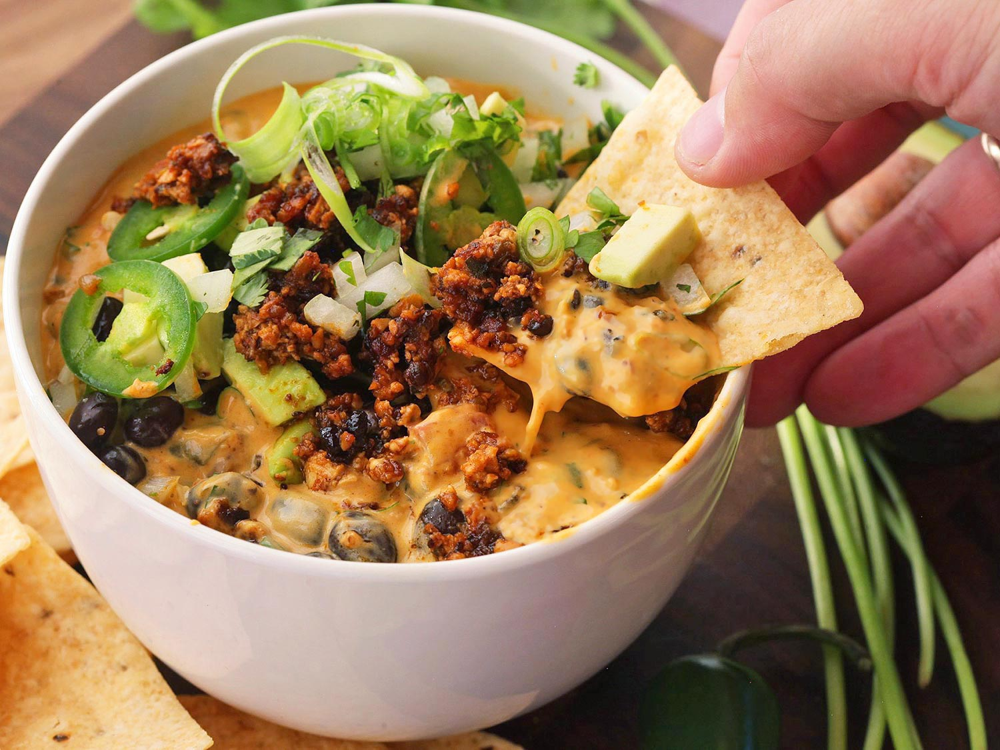

RECIPE
TIPS & GUIDELINES
KITCHEN ESSENTIALS
ABOUT US
OTHERS
☰
Radicchio Adds Color and Complexity to Classic Risotto
The Canal House Perfect Bite: Poach Your Chicken and Asparagus for a Light, Easy Meal

15 Vegan Substitutes to Impress Your Meat-Loving, Cheese-Crazy Friends
COOKING TECHNIQUES
Radicchio Adds Color and Complexity to Classic Risotto
DANIEL GRITZER
Poach Your Chicken and Asparagus for a Light, Easy Meal
CANAL HOUSE
Cheesy Baked Eggs, Meat Creamed Spinach (and Kale, and Swiss Chard)
EMILY AND MATT CLIFTON
Japanese Mentaiko Spaghetti: Drunk Food So Good, You Can Eat It Sober
DANIEL GRITZER
The Food Lab: How to Make Rich and Creamy Vegan Saag Paneerr
THE FOOD LAB
6 Common Bagel-Making Problems and How to Fix Them
STELLA PARKS
How to Make Rich and Smoky Collard Greens, With or Without Meat
DANIEL GRITZER
MORE TECHNIQUES
VIDEOS